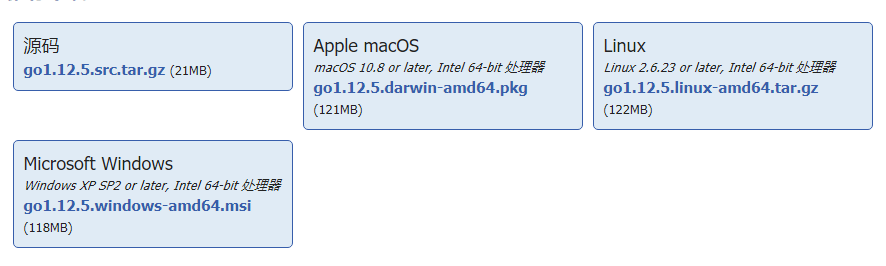

1.go 下载地址 https://studygolang.com/dl

根据操作系统 下载相应的安装包
2.设置环境变量
goroot
gopath
path 增加%goroot%\bin
3.开发工具vscode或者idea
vscode下载地址 https://code.visualstudio.com
如果是linux需要开启图形模式，如果是远程linux无法使用vscode开发，只能使用vim文本编辑器进行开发